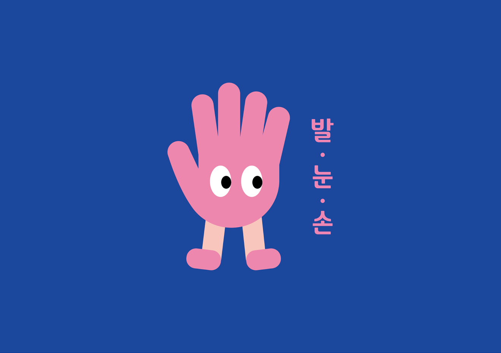
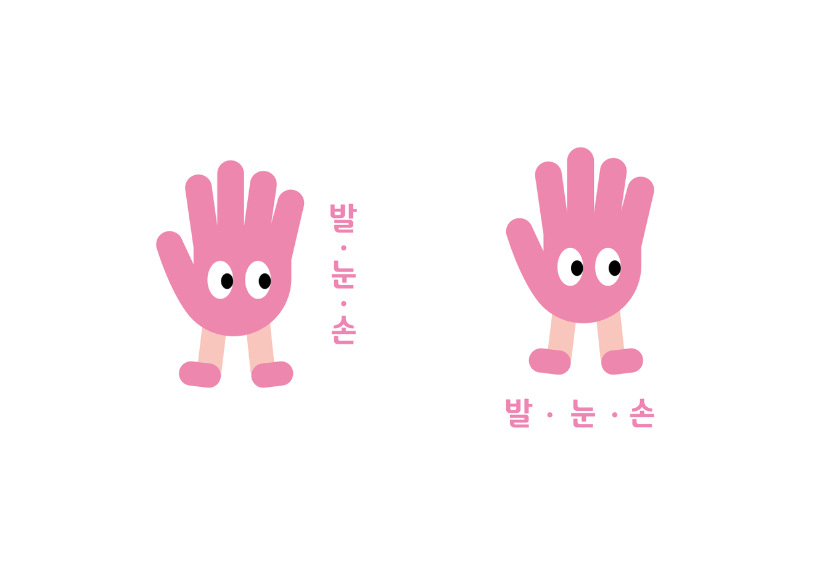
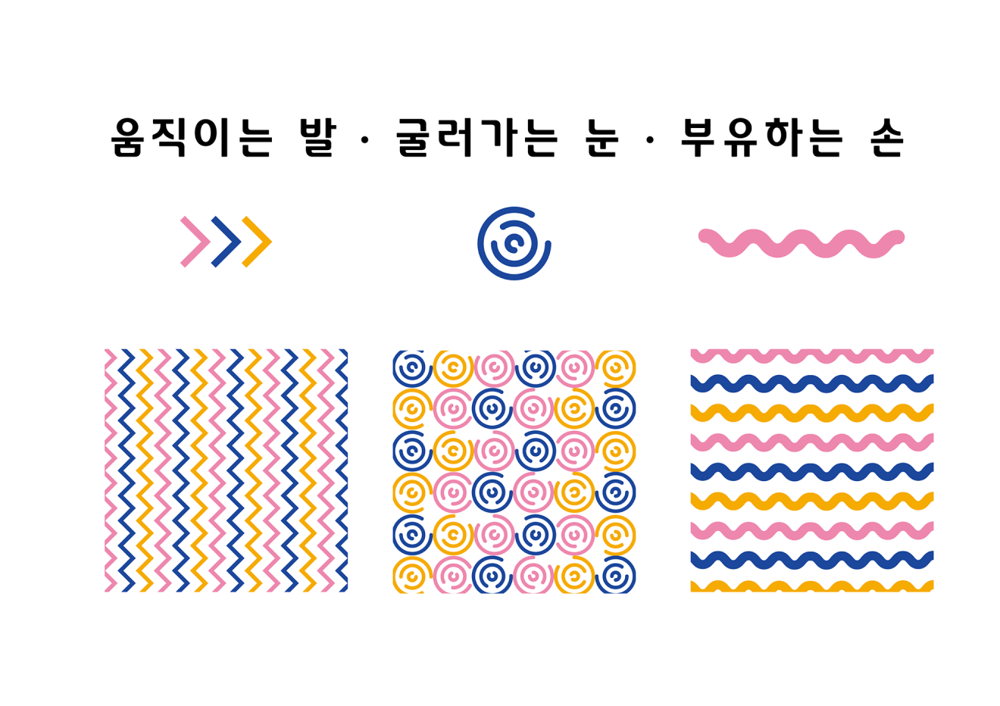
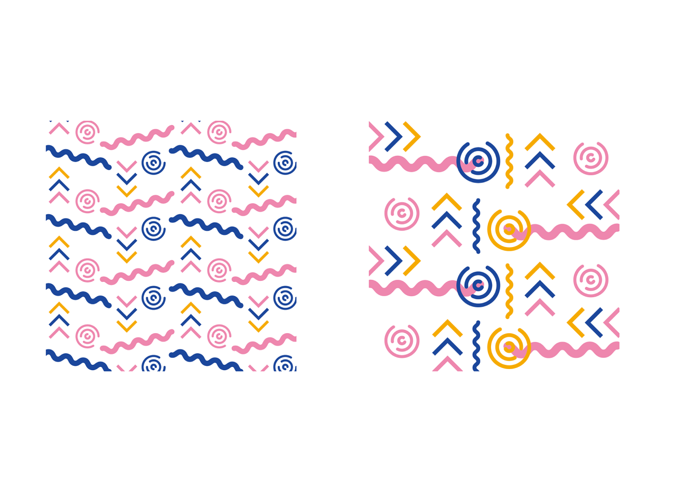
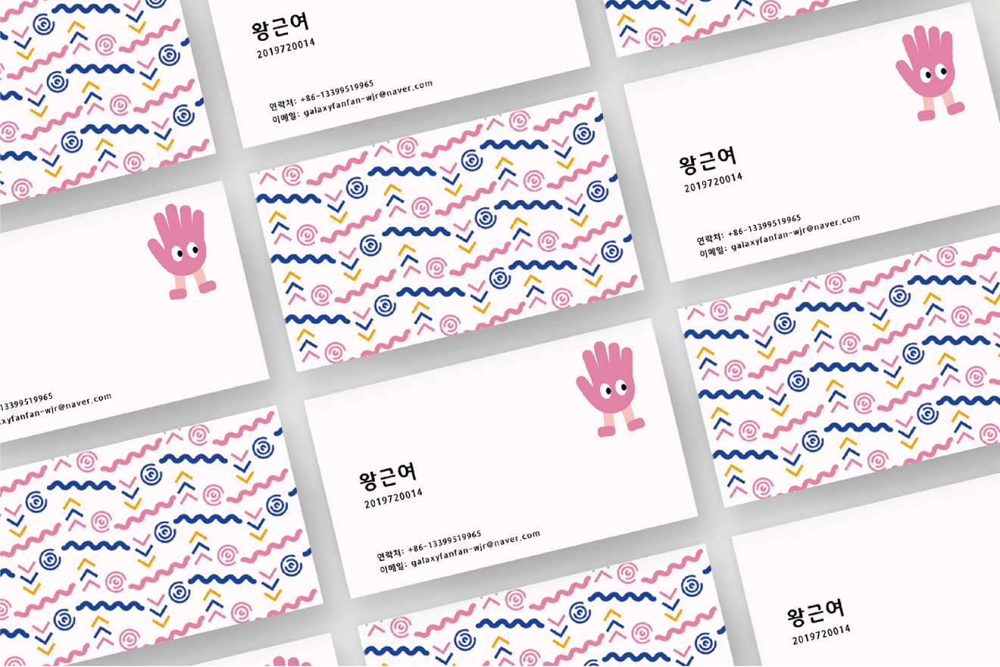
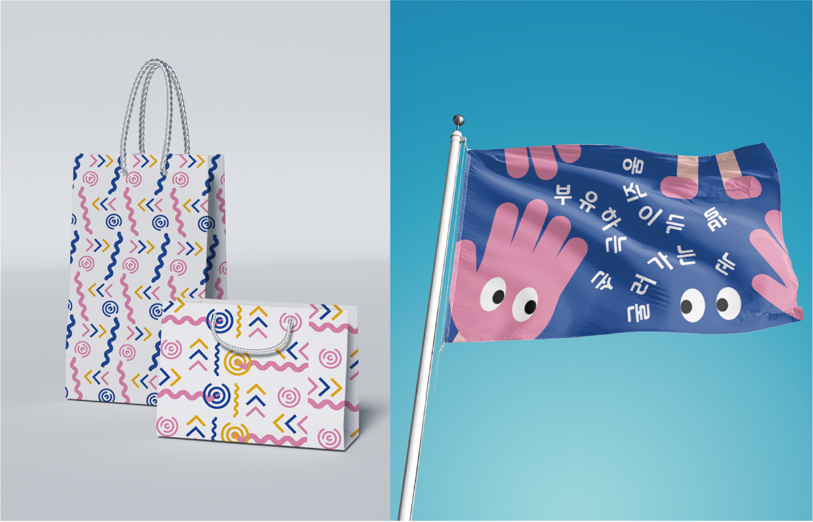

Project
Contact
galaxyfanfan-wjr@naver.com
Designer
Group Identity
왕근여
움직이는 발, 굴러가는 눈, 부유하는 손
Category
-
시각디자인과 학생들의 공통된 행동패턴이다. 로고는 발, 눈, 손 세 가지 요소를 조합하고 귀엽게 케릭터를 만들었다. 패턴은 이름과 결합하고 어울린 도안을 디자인했다.
     